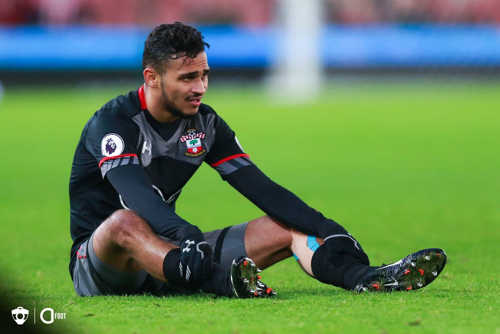

Les Transferts
Pour suivre au plus près les transferts, Maxifoot
vous propose chaque samedi le Journal des Transferts
de la semaine avec un point complet sur les dernières
infos transferts. Même hors période de mercato,
les clubs s'activent ! Pour toujours plus d'informations
sur les transferts, n'oubliez pas de lire les brèves du jour
et les articles d'actualité, complémentaires du JdT.

Soufiane Bouffal
Sofiane est né à Paris et grandit à Angers, dans le quartier de la Roseraie, de parents originaires de Meknés, au Maroc.
Cadet d'une fratrie de 3 enfants, dont une sœur jumelle2, Sofiane est formé à Angers SCO, il débute en Ligue 2 le 24 août 2012
lors d'un match à domicile contre FC Istres. En juin 2013, il signe son premier contrat professionnel, pour une durée de 3 ans.
Il commence la saison 2013-2014 comme titulaire. Il dispute 32 matchs sous les couleurs angevines, toutes compétitions confondues,
auteur d'une seule passe décisive.
La saison 2014-2015 révèle le jeune angevin qui devient un joueur clé pour l’équipe. Il marque son premier but pour Angers SCO face
au Stade lavallois le 19 septembre 2014 à la 90e minute. Il avait auparavant délivré une passe décisive, mais cela n’empêche pas
la défaite de son équipe (3-2).
Lors de la 14e journée, il marque l'unique but de la rencontre face à Dijon FCO à la 62e minute, et permet à son équipe de s'éloigner de la zone de relégation.
Il est nommé joueur de la mi-saison de Ligue 2, couronnant un très bon début de saison 2014-2015 (4 buts et 3 passes décisives).
Le phénomène
Pour suivre au plus près les transferts, Maxifoot
vous propose chaque samedi le Journal des Transferts
de la semaine avec un point complet sur les dernières
infos transferts. Même hors période de mercato,
les clubs s'activent ! Pour toujours plus d'informations
sur les transferts, n'oubliez pas de lire les brèves du jour
et les articles d'actualité, complémentaires du JdT.